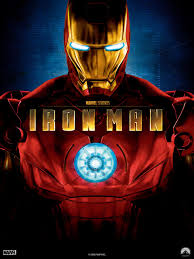

Iron Man is a 2008 American superhero film based on the Marvel Comics character of the same name, produced by Marvel Studios and distributed by Paramount Pictures.1 It is the first film in the Marvel Cinematic Universe (MCU). The film was directed by Jon Favreau, with a screenplay by the writing teams of Mark Fergus and Hawk Ostby and Art Marcum and Matt Holloway. It stars Robert Downey Jr. as Tony Stark / Iron Man, alongside Terrence Howard, Jeff Bridges, Shaun Toub, and Gwyneth Paltrow. In Iron Man, Tony Stark, an industrialist and master engineer, builds a powered exoskeleton and becomes the technologically advanced superhero Iron Man.  The film had been in development since 1990 at Universal Pictures, 20th Century Fox, or New Line Cinema at various times, before Marvel Studios reacquired the rights in 2006. Marvel put the project in production as its first self-financed film, with Paramount Pictures as its distributor. Favreau signed on as director, aiming for a naturalistic feel, and he chose to shoot the film primarily in California, rejecting the East Coast setting of the comics to differentiate the film from numerous superhero films set in New York City-esque environments. Filming began in March 2007 and concluded in June. During filming, the actors were free to create their own dialogue because pre-production was focused on the story and action. Rubber and metal versions of the armors, created by Stan Winston's company, were mixed with computer-generated imagery to create the title character. Iron Man premiered in Sydney on April 14, 2008, and was released in the United States on May 2, 2008. The film was a critical and commercial success, grossing over $585 million and garnering critical acclaim. Downey's performance as Tony Stark was particularly praised. The American Film Institute selected the film as one of the ten best of the year. It was also nominated for two Academy Awards for Best Sound Editing and Best Visual Effects. Two sequels, Iron Man 2 and Iron Man 3, were released on May 7, 2010, and May 3, 2013, respectively.